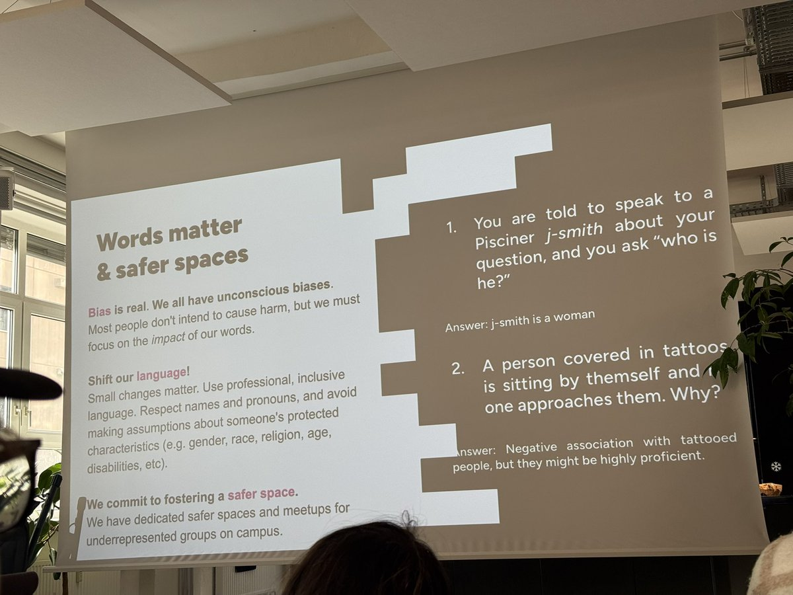

時璃風医詩🌈🏳️🌈
@hagishigure
连用一节课的时间学习包容都做不到的人我不相信会在这个科目上有任何成就。
我认为所有人在学习之前，都应该先了解巴塔耶的「耗费」，明白自己在学的东西对自己没有任何意义。

早见Hayami
@Hayami_kiraa
在德国学C++, 第一节课不是讲编程语言，而是包容性语言，比如
- assume 一个叫 J-Smith 的人是男性；
- 认为一个满身文身的人并不专业；
- 称呼群体的时候不能说 guys, 要说 folks/everyone；
- 不能说 ladies and gentleman, 尊重性别非二元；
- https://t.co/GUee4ZDfn0